患者さんがLINEから初回カウンセリングを申し込んでから、ご来院いただくまでの流れを、「患者さんが行うこと」「受付が行うこと」「Lシンクが自動で行うこと」の3つに分けてまとめています。
患者さんから見た、予約から来院までの流れです。受付の皆さまは、患者さんに何が見えているかの確認用にご覧ください。
本日から1週間以上先の日程だけ受け付けています。この時点では仮予約で、まだ確定していません。
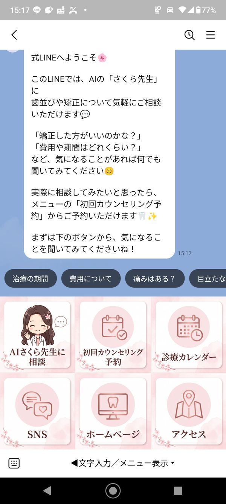
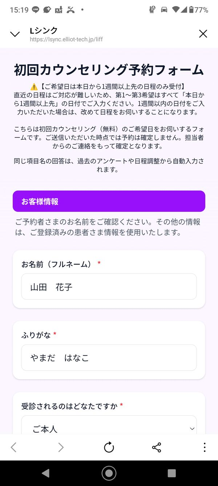
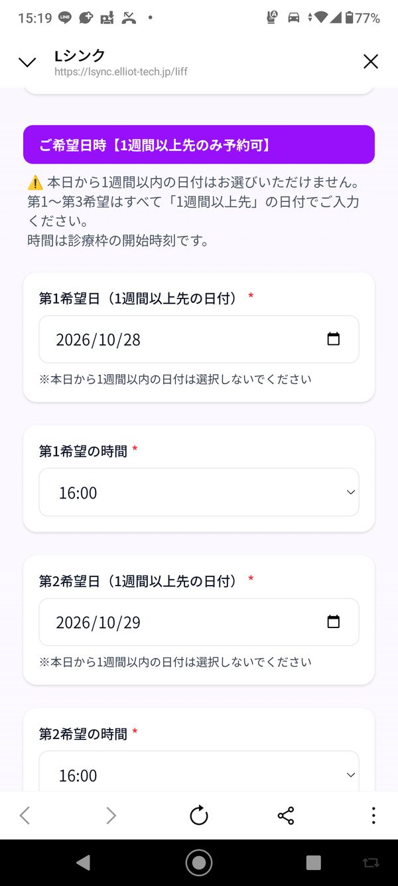
予約フォームを送ったあとの完了画面（画面を再現したもの）
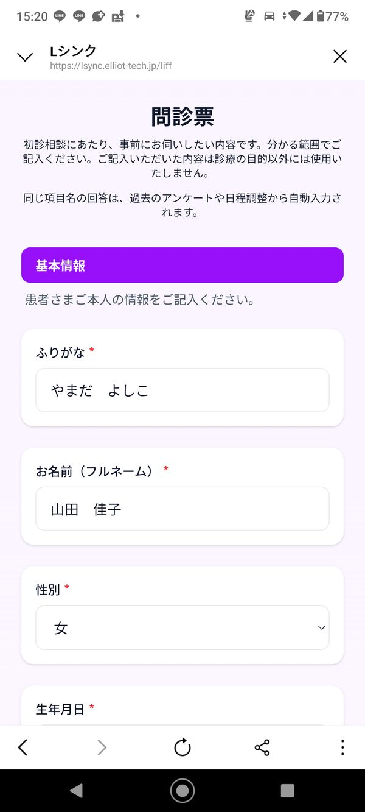
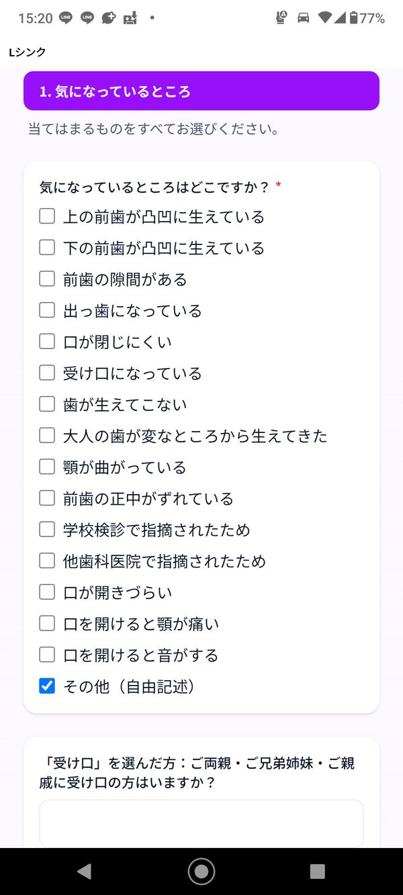
確認メッセージと確定のお知らせ（画面を再現したもの）
届く文面は「3 Lシンクが自動で行うこと」の④に載せています。
予約した日時に来院します。問診票に答えていない方は、来院時に紙の問診票に記入します。
受付の操作は、どれも通知メール（hollywood-smile@mirror.ocn.ne.jp 宛て）が届いたときに行います。ふだんの操作は①と②の2つです。
| 届く通知メール | 届くタイミング | 受付が行うこと |
|---|---|---|
| 初回カウンセリング予約フォーム | 患者さんが希望日を送ったとき | ① 日程を登録して確認を送る |
| 問診票 | 患者さんが問診票に答えたとき（仮予約の直後、またはリマインドのあと） | ② メールから問診票を確認する |
| 初回カウンセリングのキャンセル | 患者さんが「キャンセル」を押したとき | ③ 予約一覧を確かめる |
きっかけ：「初回カウンセリング予約フォーム」の通知メールが届いたとき
予約フォームの第1〜第3希望から日程を決め、Lシンクの管理画面で次の順に登録します。問診票の回答が届いていなくても、登録して構いません。手順4で「予約の確認（ボタン付き）」を選びます。
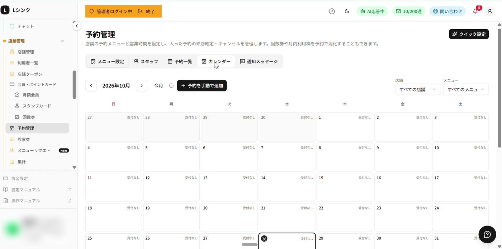
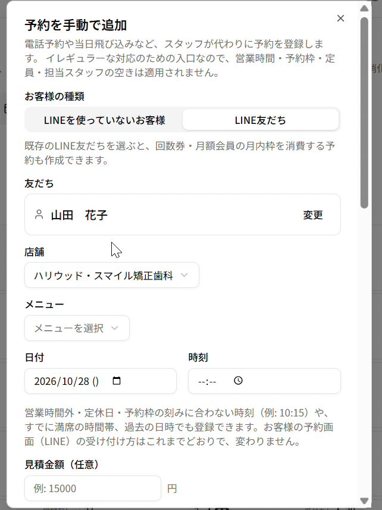
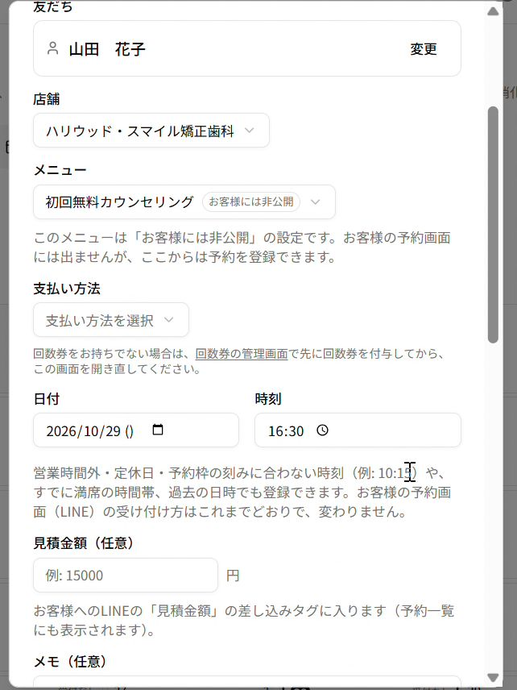
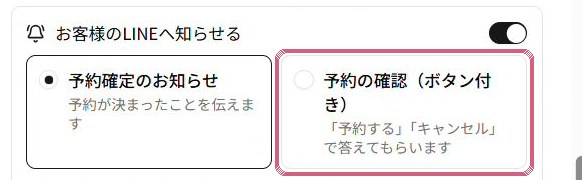
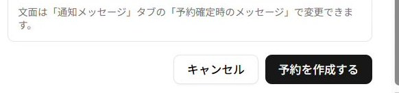
このあと、患者さんが「予約する」を押すと確定します。確定の連絡をチャットで別に送る必要はありません。
左側の「予約確定のお知らせ」を選ぶと、患者さんの返事を待たずに確定のお知らせだけが届きます。電話などで日程の了承をいただいている場合に使えます。
きっかけ：「問診票」の通知メールが届いたとき
メール本文には回答内容は載りません。ボタンのリンクは7日間有効です。早めに確認してください。
問診票は任意なので、メールが届かない患者さんもいます。未回答の方に催促する必要はありません。
〇〇 〇〇 さんから回答がありました。
お名前の欄には、患者さんのLINEの表示名が入ります。
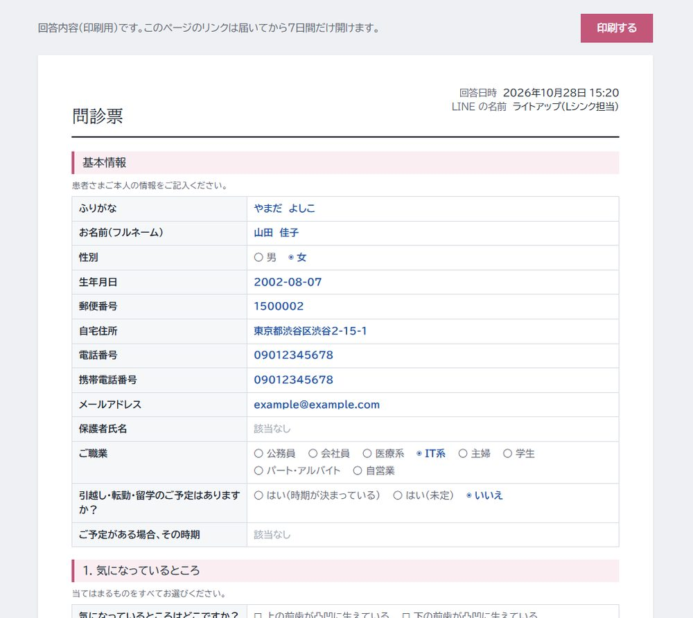
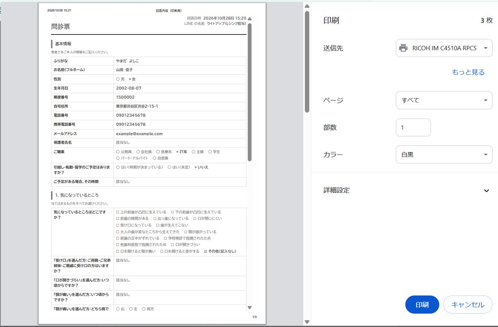
きっかけ：「初回カウンセリングのキャンセル」の通知メールが届いたとき
患者さんへのキャンセル受付と出し直しのご案内は、自動で届いています。受付から連絡する必要はありません。
当日までの声かけや確認は、LINEが自動で送ります。受付から個別に連絡する必要はありません。
翌日に届くフォロー（画面を再現したもの）。「〇〇様」には、患者さんのLINEの表示名が入ります。
患者さんが「予約する」を押すと、予約が確定し「ご予約確定のお知らせ」が届きます。持ち物と、ご来院時の注意事項（アクセサリーを外してくることなど）が入っています。
確認メッセージ・確定のお知らせの実際の文面は「予約管理」→「通知メッセージ」で確認・変更できます。
患者さんに届くリマインド（3日前・前日とも同じ文面。画面を再現したもの）
キャンセル時に届くご案内（画面を再現したもの）
| こんなとき | 対応 |
|---|---|
| フォローが届いても、希望日が送られてこない | 自動のフォローは一度だけです。そのあとは、患者さんがメニューの「初回カウンセリング予約」をもう一度押せば、いつでも申し込めます。お急ぎの方には、チャットでお声がけください。 |
| 確認メッセージを送ったのに、ボタンが押されない | 「予約管理」→「予約一覧」の「お客様の返答」で、返事の有無を確かめられます。返事がないときは、LINEのチャットで「ご確認をお願いします」とお声がけください。 |
| 確定したあとに、日程を変えたいと連絡が来た | リマインドが届いたあとなら、患者さんに「予約をキャンセル」ボタンを押して、予約フォームを出し直していただけます。それ以外のときは、チャットで新しいご希望日をお伺いし、決まったら受付①と同じ手順で新しい日時を登録してください。元の予約は「予約一覧」から取り消します。 |
| 希望日がどれも都合が合わない | LINEのチャットで、別の候補日を患者さんにお伺いしてください。決まったら受付①と同じく予約管理に登録します。 |
| 1週間以内の日付が届いた | フォームには「改めて日程をお伺いする」と書いています。チャットで別の日程をお伺いしてください。 |
| 問診票にまだ答えていない患者さんがいる | 問診票は任意なので、そのままで大丈夫です。3日前と前日のリマインドで自動でご案内しています。当日までに回答がなければ、来院時に紙でご記入いただいてください。 |
| 問診票のリンクが期限切れ | Lシンクの管理画面にログインし、アンケートの「問診票」から回答を開いて確認してください。 |
| 通知メールが届かない | 迷惑メールフォルダを確認してください。それでも届かないときは、Lシンク事務局へご連絡ください。 |
| さくら先生がうまく答えられなかった | 初期設定シートの「QA集」に、その質問と答えを書き足してください。自動で読み込まれます。 |
| 変えたいこと | 直す場所 | 変わること |
|---|---|---|
| 予約が入らない方へのフォローの文面 | ステップ配信「初回カウンセリング予約」 | 自動①のフォローが変わります。変えたいときはLシンク事務局へご相談ください |
| 確認・確定・キャンセル時の文面 | 予約管理 → 通知メッセージ | 自動③・⑤で患者さんに届く文面が変わります |
| リマインドの文面・送る日 | 予約管理 → メニュー設定（リマインド設定） | 自動④のリマインド（問診票のご案内を含む）が変わります |
| カウンセリングの時間・休診日 | 予約管理 → メニュー設定 | 予約を登録できる時間帯や枠が変わります |
| 問診票・予約フォームの質問 | アンケート | 患者さんが入力する項目が変わります |
| 通知の届け先 | 通知メール設定 | メールが届くアドレスを追加・停止できます |
| さくら先生に覚えさせること | 初期設定シート「QA集」 | 書き足すと、さくら先生が答えられる内容が増えます |
| よくある質問のボタンの返事 | キーワード応答 | 「費用について」などを押したときの返事が変わります |